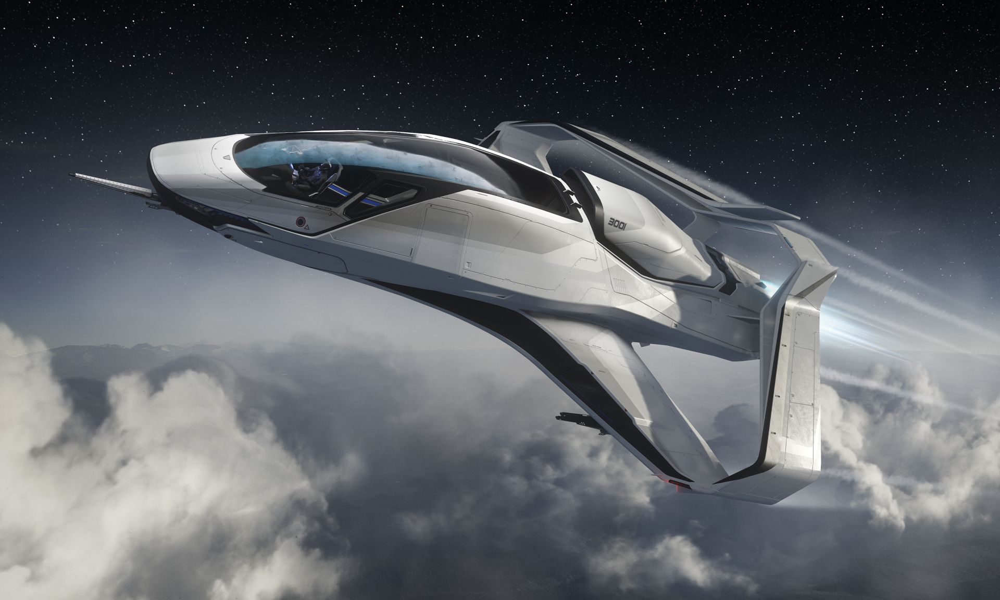

In 2889, the wake of the X3's success, the Lang brother built out his own teams: Otto worked on the 200 series observation craft and Andreas designed what the company saw as its crown jewel: the 300 series personal spacecraft. The design team consists of fanatics, idealists to make sure the 300's styling would carry some higher ideal. The resultant team was an eclectic mix: standard ship design specialists focused on areas like power plants, thrusters, and life support, while outsiders from other industries were brought in to work on aesthetics, comfort and the general feel of the ship.
In 2897-08-03, the first hand-machined Origin 300 prototype (pre-production models lacked the closing alphabetic variant designators such as "-i" or "-p") took flight at Frankfurt Cosmodrome. The first flight was an enormous success from a technical standpoint: the prototype completed nine Earth orbits without a hitch. Additional early tests rapidly checked off the standard first flight objectives, including the Earth-Luna slingshot and the initial quantum to Io. Inside six months, 300-1 was ready to perform the first jump tests in real space. However, a complete materials manifest of the current metals, alloys and components indicated that the end retail cost of the ship would be over fifteen times that of an Aurora. The company's board, previously content to let Lang work without restrictions, stepped in. For the next fourteen months, the factions of the company fought a vicious internal battle over the 300's production model, with a chain of executives resigning in defiance of Lang's obstinance. Spacecraft designers and outside consultants were tasked with determining how to turn a perfect, expensive prototype into a working production model without sacrificing the soul of the machine. The result of these reworkings was a spacecraft with a lower price roughly four times that of the Aurora.
In 2898, the high court passed down a verdict in Pressman v. United Empire of Earth that allowed civilian craft to use the same speed safety standards that racing ships had been using for years. Pressman argued that with the current advances in avionics, the older safety regulations set by the Department of Transportation and Navigation were an unfair burden for modern pilots. The court agreed and the timing could not have been better for the 300 would be the first new spacecraft to take advantage of these new speed safety limits. As a result, in 2899, the 300 was one of the fastest ships available in its class. Although RSI, Drake and others quickly followed suit and produced ships that were 'uncapped,' Origin won popular acclaim by getting there first.
On 2899-12-18, the 300 series (only the 300i at the time) premiered at a special reveal ceremony at Baikonur to incredible acclaim. The combination of its stunning lines and incredible performance won over audiences immediately. The Origin 300 quickly became the 'look' of popular spaceflight — a symbol of success and a goal for everyone setting out into the galaxy.
After the introduction of the 300 series, over a dozen 300 series variants have been offered since the line's inception, with the majority being minor, one-off yearly models themed for particular events. Origin has expanded their production capabilities every year since the 300 launched, using the success of the design to finance more spacecraft that follow the same aesthetic philosophy. Origin continues to adhere to Andreas Lang's basic belief that the look and handling of spacecraft should speak to our deeper nature.
The Origin 300i is a luxury single-seater starter ship that is capable of filling almost any role in the galaxy. It is the base model of the 300 series.
The Origin 315p is the exploration variant of the 300 series. Featuring a more robust power plant and a custom scanning package, exclusively designed by Chimera Communications.
The Origin 325a is the combat variant of the 300 series. It features an advanced weapon payload as well as a custom targeting system designed especially for the 325a by WillsOp.

The Origin 350r is the racing variant of the 300 series. It features dual thrusters instead of a single one in the rest of the ships in the same series.